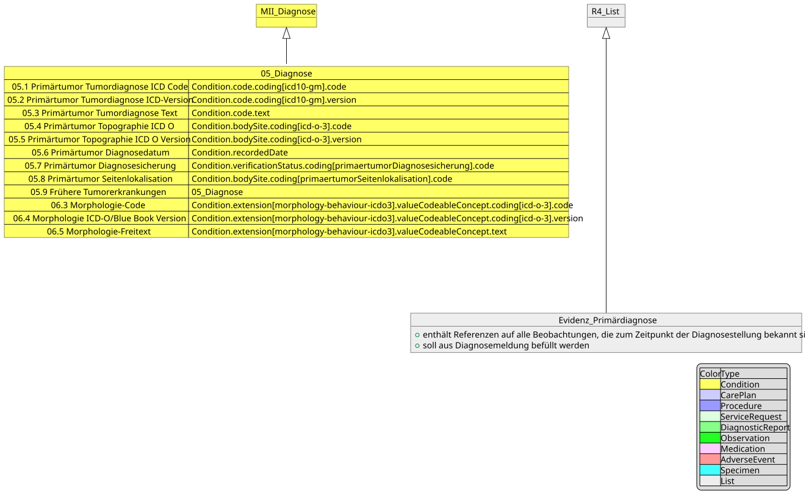
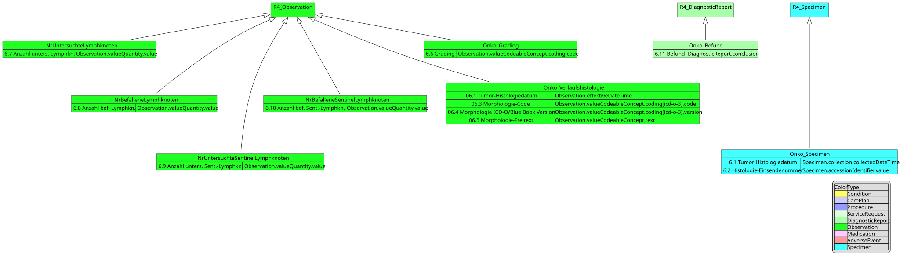
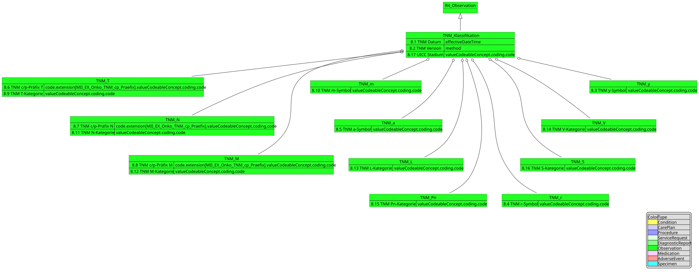
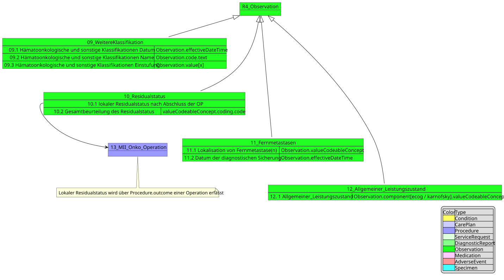
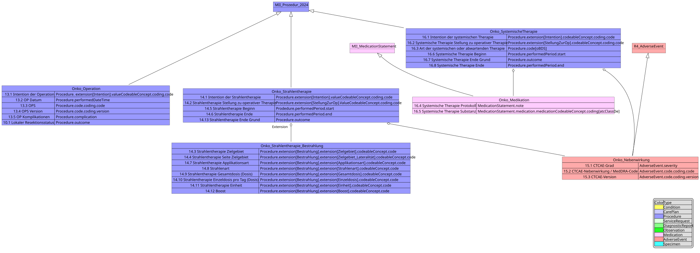
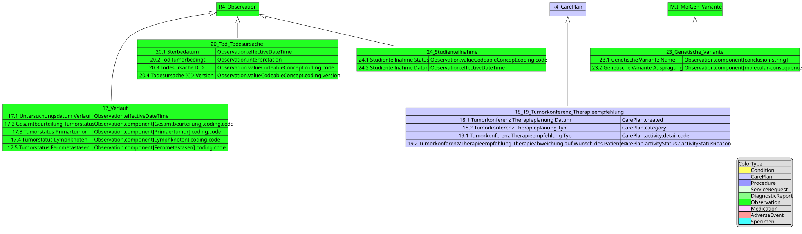
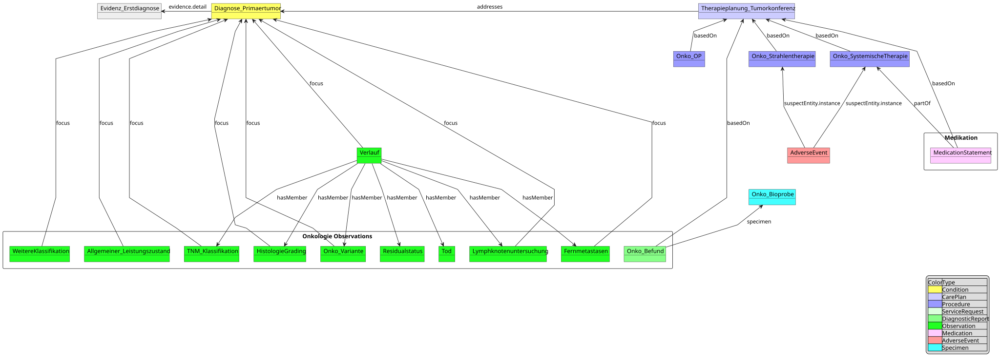

MII IG Kerndatensatz-Modul Onkologie
2026.0.3 - release
MII IG Kerndatensatz-Modul Onkologie - Local Development build (v2026.0.3) built by the FHIR (HL7® FHIR® Standard) Build Tools. See the Directory of published versions
Diese Seite beschreibt die Konformitätsfestlegungen des Moduls Onkologie: Konformitätsverben, Must Support, Umgang mit fehlenden Daten, die Such-API (CapabilityStatement), die verwendeten Terminologien, die Verwendung von Extensions sowie den Validierungsstatus.
Es gelten die FHIR-Konformitätsverben (SHALL/SHOULD/MAY bzw. MUSS/SOLL/KANN). Verpflichtende Elemente sind in den Profilen entsprechend gekennzeichnet.
Die Bedeutung von Must Support wird modulspezifisch festgelegt: Ein konformes System muss als Must Support markierte Elemente verarbeiten und bereitstellen können, sofern Daten vorliegen. Da die Kardinalitäten aus dem oBDS teilweise „weicher" übernommen wurden (siehe Abweichungen zum oBDS), ist Must Support das maßgebliche Mittel zur Kennzeichnung erwarteter Datenelemente.
Fehlende Daten werden gemäß den MII-Festlegungen abgebildet (z. B. über dataAbsentReason),
nicht durch Weglassen verpflichtender Strukturen.
Um eine dezentrale Datenauswertung mittels des Forschungsdatenportals Gesundheit (FDPG) der
Medizininformatik-Initiative zu ermöglichen, MUSS die
capabilities-Interaktion unterstützt
werden, sodass durch den FHIR-Server unter [BASE_URL]/metadata ein CapabilityStatement
exponiert wird. Innerhalb dieses CapabilityStatement MUSS angegeben werden, welche Profile
inkl. Version sowie welche Suchparameter unterstützt werden. Darüber hinaus MUSS eine Konformität
zu dem nachfolgenden CapabilityStatement in der jeweiligen CapabilityStatement-Instanz unter
CapabilityStatement.instantiates
angegeben werden.
Das maßgebliche CapabilityStatement des Moduls: MII CPS Onkologie.
Die International Statistical Classification of Diseases and Related Health Problems Version 10 German Modification (ICD-10-GM) wird für die Beschreibung der Primärdiagnose, für Vorerkrankungen und für die Kodierung der Todesursache verwendet. Das BfArM gibt die ICD-10-GM jährlich heraus: https://www.bfarm.de/DE/Kodiersysteme/Klassifikationen/ICD/ICD-10-GM/_node.html. Hinweis: Im oBDS ist eine Todesursachenmeldung mittels ICD-10-GM vorgesehen. Das KDS-Modul Onkologie folgt hier den Vorgaben des oBDS und kodiert mit ICD-10-GM.
Die Beschreibung der Lokalisierung des Primärtumors wird über ICD-O-3 Topographie kodiert, die morphologische Beschaffenheit über ICD-O-3 Morphologie. Herausgeber ist das BfArM: https://www.bfarm.de/DE/Kodiersysteme/Klassifikationen/ICD/ICD-O-3/_node.html.
Der Operations- und Prozedurenschlüssel (OPS) wird benutzt, um operative Prozeduren zu kodieren, die im Rahmen der onkologischen Diagnostik und Therapie durchgeführt werden: https://www.bfarm.de/DE/Kodiersysteme/Klassifikationen/OPS-ICHI/OPS/_node.html.
Die Medikation wird im oBDS ursprünglich als Freitext erfasst, wobei eine Erfassung per ATC durch die Primärsysteme angeboten werden kann. In den vorliegenden FHIR-Profilen wird davon ausgegangen, dass die Medikation primär in ATC kodiert vorliegt. Es handelt sich dabei hauptsächlich um Medikamente, die im Rahmen der systemischen Therapie als antineoplastische Therapien verabreicht werden (Chemo-, Hormon-, Immuntherapeutika): https://www.bfarm.de/DE/Kodiersysteme/Klassifikationen/ATC/_node.html.
Zur Unterstützung experimenteller und neuartiger Substanzen, die noch keine etablierten
ATC-Codes besitzen, wurde das UNII-System der FDA integriert. UNII-Codes ermöglichen die
eindeutige Identifikation von Wirkstoffen auf molekularer Ebene und sind besonders relevant für
experimentelle Substanzen in klinischen Studien (z. B. Iberdomide mit UNII 8V66F27X44),
neuartige Immunmodulatoren und Substanzen in der frühen Entwicklungsphase. Das
SystemischeTherapie-MedicationStatement-Profil unterstützt daher eine duale Kodierung mit ATC
und UNII. UNII-Datenbank: https://precision.fda.gov/uniisearch; UNII-CodeSystem in FHIR:
http://fdasis.nlm.nih.gov.
Die TNM-Klassifikation maligner Tumore ist das weltweit verwendete System für die klinische Beschreibung einer Tumorerkrankung. Die aktuelle 8. Auflage wird in Zusammenarbeit mit der Union for International Cancer Control (UICC) herausgegeben.
Die Common Terminology Criteria for Adverse Events werden im Nebenwirkungsprofil zur Erfassung von Nebenwirkungen der Strahlen- und Systemischen Therapie eingesetzt: https://ctep.cancer.gov/protocoldevelopment/electronic_applications/ctc.htm.
https://www.bfarm.de/DE/Kodiersysteme/Terminologien/SNOMED-CT/_node.html.
LOINC (Logical Observation Identifiers Names and Codes) ist ein internationales, vom Regenstrief Institute herausgegebenes System zur eindeutigen Identifizierung und Kodierung von medizinischen Beobachtungen. Das BfArM ist gemäß § 355 Abs. 7 SGB V für die Weiterentwicklung von LOINC für Deutschland zuständig: https://www.bfarm.de/DE/Kodiersysteme/Terminologien/LOINC-UCUM/LOINC-und-RELMA/_node.html. Die aktuelle internationale LOINC-Version ist unter http://loinc.org verfügbar.
Unified Code for Units of Measure (UCUM) ist ein System zur Kodierung von Maßeinheiten, gepflegt vom Regenstrief Institute. Das BfArM stellt eine Werteliste mit UCUM-Kodes bereit: https://www.bfarm.de/DE/Kodiersysteme/Terminologien/LOINC-UCUM/UCUM/_node.html.
Das Medical Dictionary for Regulatory Activities (MedDRA) umfasst Pharmazeutika, Biologika, Vakzine sowie Arzneimittel/Geräte-Kombinationen: https://www.meddra.org/how-to-use/support-documentation/german/welcome.
Die Umsetzung des oBDS erfolgt unter Verwendung von Extensions. Dies hat insbesondere mit der oBDS-Datenstruktur und den oBDS-spezifischen Codesystemen und dem Versuch zu tun, diese mit Modulen aus dem MII-Kerndatensatz abzubilden. Da die Verwendung von Extensions im FHIR-Kontext nach Möglichkeit zu vermeiden ist, solange es sinnvolle Alternativen innerhalb des bestehenden FHIR-Datenmodells gibt, werden die zentralen Fälle hier begründet:
CarePlan.intent beschreibt die Verbindlichkeit der
Ressource, nicht die Behandlungsabsicht im Sinne des oBDS. Die Stellung einer Strahlen- oder
Systemischen Therapie ist über die bestehenden FHIR-Prozeduren nicht abbildbar.Die vollständige Liste der Extensions ist unter Artefakte aufgeführt.
Die folgenden Diagramme stellen die Profile in vereinfachter Form dar, mit Fokus auf die Vererbung von anderen Profilen und das Mapping der oBDS-Datenfelder auf die entsprechenden FHIR-Elemente.
Diagnose (inkl. Histologie und Lokalisation des Primärtumors):

Histologie:

TNM-Klassifikation:

Weitere Klassifikationen, Residualstatus, Allgemeiner Leistungszustand, Fernmetastasen:

Prozeduren, Medikation und Nebenwirkungen:

Verlauf, Tumorkonferenz, Tod und Genetische Variante:

Referenzen der Ressourcen untereinander:

Das Modul wird kontinuierlich gegen den FHIR-R4-Standard und die definierten Profile validiert.
Ein Teil der Validierungsmeldungen wird über advisor.json als false-positive oder als externe
Abhängigkeit (z. B. proprietäre Terminologien wie MedDRA, limitierte ICD-O-3-Morphologie auf
öffentlichen Terminologieservern, OPS-Versionsmix) gefiltert. Der jeweils aktuelle technische
Stand ergibt sich aus den CI-Läufen im
GitHub-Repository.
TODO:REVIEW — Die konkreten Validierungszahlen aus der Quelle (Stand 2025-12-16, Version
2026.0.0) sind bewusst nicht als Momentaufnahme übernommen worden, da der IG-Publisher-Build
einen eigenen QA-Report (qa.html/qa.txt) erzeugt. Nach dem ersten grünen CI-Build den QA-Stand
hier referenzieren.